GIS Safety Map
Planning the Safety Map and map-layer admin for a shipyard GIS — requirements turned into functions and screens.


From raw 3D data to a wall-by-wall histogram
Web-based 3D software for the Korea Institute of Energy Research that maps solar radiation onto building surfaces for solar-panel planning. As PM and service planner, I turned the institute’s requirements into functions and screens, organized and produced the 3D spatial data myself, and kept researchers and two developers working toward the same result.
View Screens1-1. Background
To plan solar installations, the institute needed solar radiation analyzed in 3D — not just on roofs, but on every wall. The 2025 scope was to visualize analysis data computed at 25 cm resolution on a 3D building, let users pick a wall and see its radiation as a histogram, and pull statistics for any area they choose.
DESIGNER’S NOTE
Besides managing the schedule and progress, I analyzed the client’s requirements and connected them to functions and screens, planned how the 3D spatial data would be built, documented the data production process and produced the data myself — then coordinated between researchers and developers.
2-1. Kickoff Questions
The sample analysis data raised more questions than answers. At the kickoff meeting I brought a list of open points about the data, the analysis results and how they should be shown, so we could settle the scope before designing screens.
Buildings only, or the flat ground around them too? Which area is in scope this year?
Which values and statistics — average, sum — appear when a wall or cell is selected? What is the color legend based on?
Is converting Rhino (3dm) results into a web format part of the work? Are LOD1 buildings shown alongside the analysis?
2-2. Requirements → Functions
I wrote the requirements definition and the function list, splitting each requirement into functions developers could implement and linking every function to a screen.
| Requirement | Functions |
|---|---|
| GIS data collection & processing | Analyze collected data · build analysis data in a web format · build LOD1 building and terrain data for the pilot area |
| Rendering environment | Place search · nationwide LOD1 buildings & DEM · select a building · select a wall · export a wall as a 2D polygon · select cells by drag or polygon |
| Analysis visualization | Histogram of the selected cells (direct / diffuse radiation) · select all cells · color by legend |
2-3. Screen Design
The first screen designs set the flow: find a place and a building on the map, choose a wall to analyze, then view the result as a histogram and export it. Open questions — which values to chart, which export format — were marked on each screen and resolved with the client.
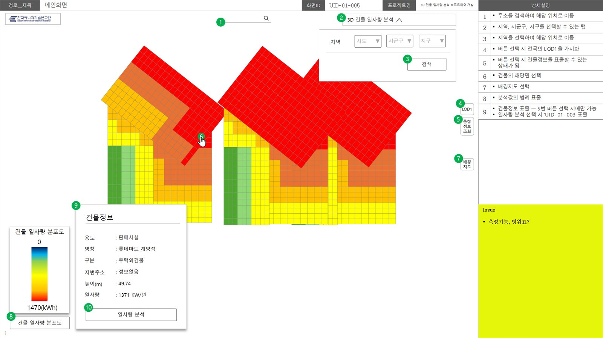
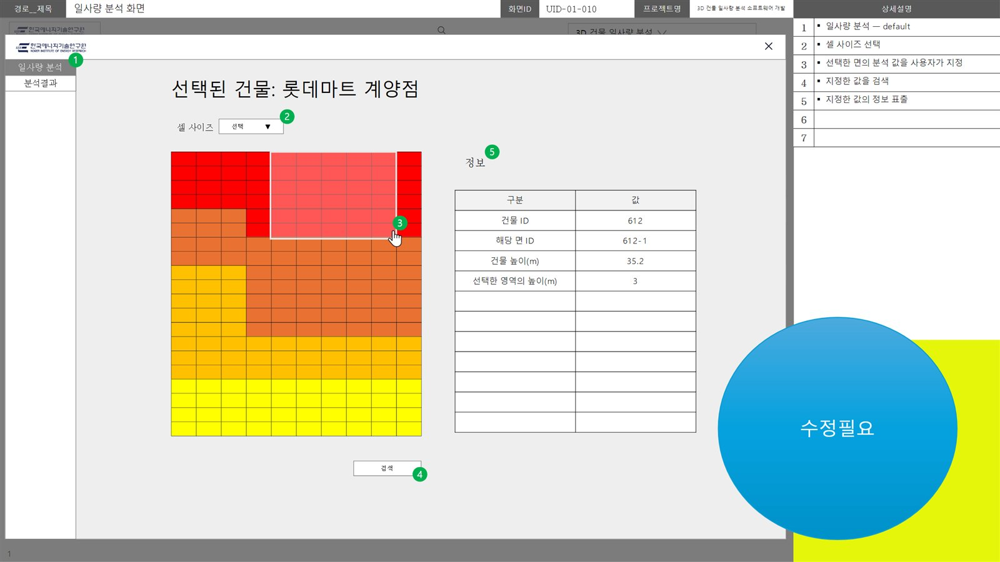
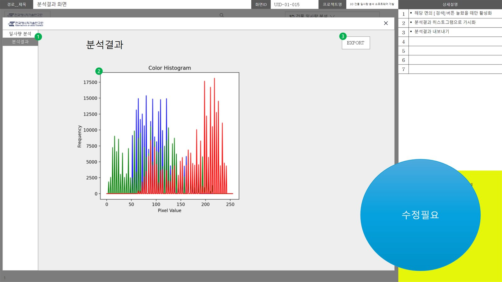
3-1. 3D Data Production
The analysis modeler needed 3D buildings on real terrain. I combined the national building-height database with a DEM, computed absolute building heights, and converted the result into formats the modeler could open — documenting each step so it could be repeated next year.
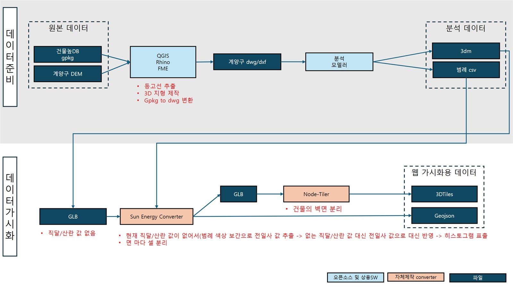
ISSUES I SOLVED ALONG THE WAY
Buildings (EPSG:5179) and terrain (EPSG:5186) used different coordinate systems, so I unified them before merging. The merged model then appeared in the sea off the Philippines because its origin wasn’t set — I fixed the placement with a Rhino Python script and set the coordinate system in FME.
3-2. Service Data Structure
The analysis results came as one mesh per building, which worked for viewing but not for picking cells. I proposed a service structure that splits each building into walls and each wall into cells with their own ID and values, and raised the cases that needed a rule: cells with unclear grid lines, and rounded corners that had to be grouped into walls by surface direction.
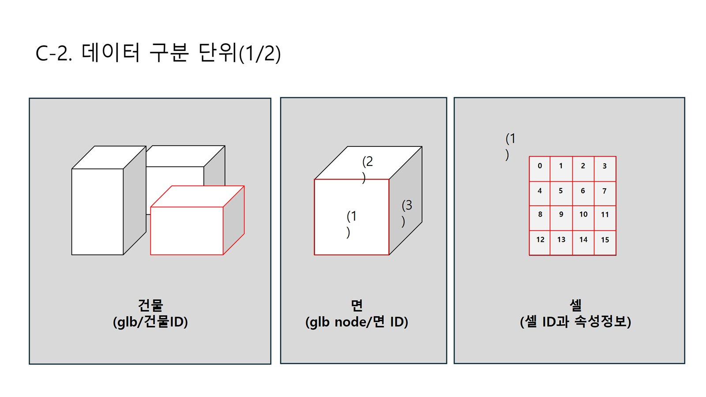
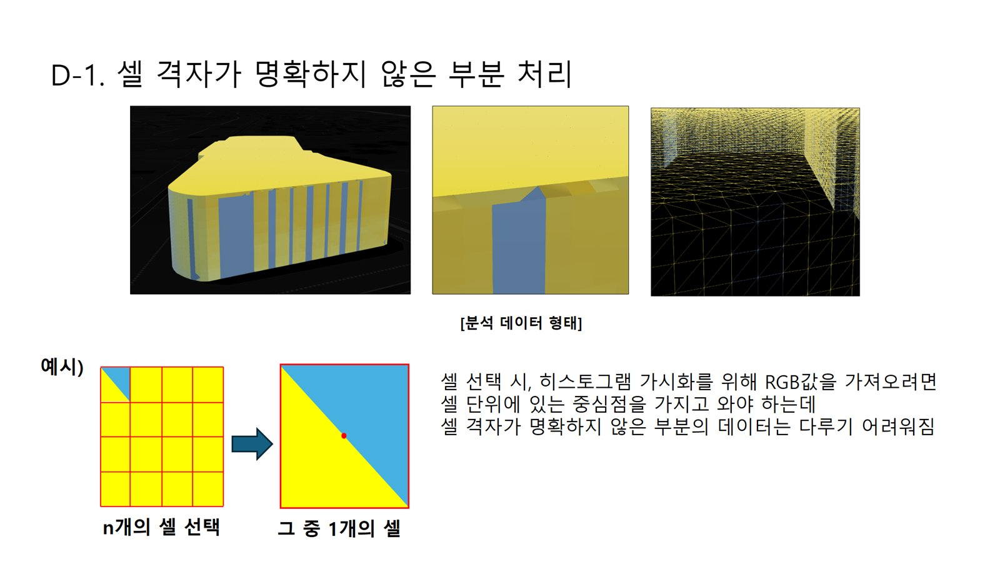
3-3. Image vs. 2D Vector
Exporting each wall as an image was quick, but half cells and blurry edges would merge or drop data, and fixed image sizes wouldn’t scale to large walls. We compared both and adopted 2D vectors, so every cell keeps its exact boundary. The team’s in-house converter then split walls and cells into 3D Tiles and per-wall GeoJSON.
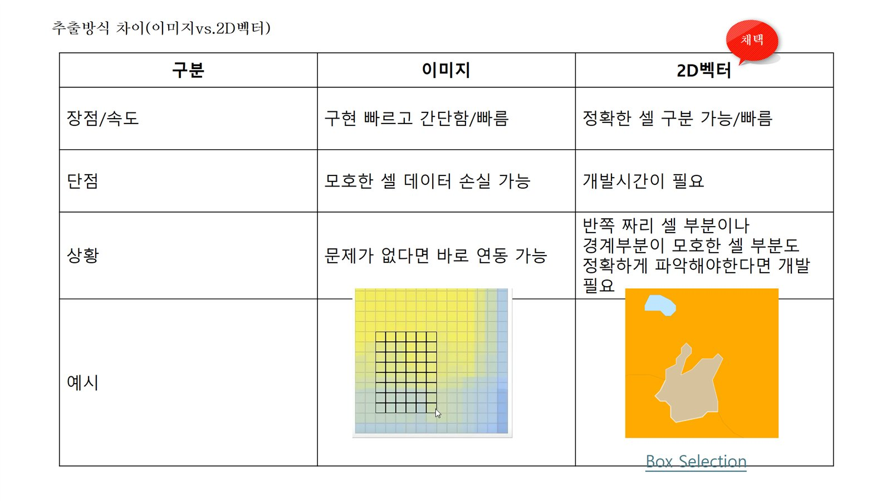
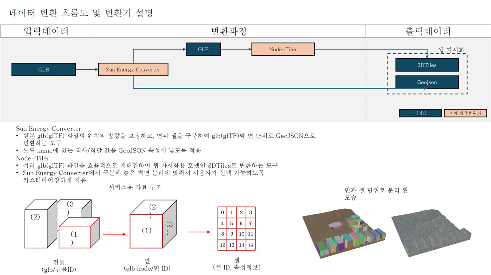
4-1. Wall & Cell Selection
Selecting a wall on the 3D map opens it flat in its own view. From there users select all cells, drag a box, or draw a polygon around the area they want to analyze.
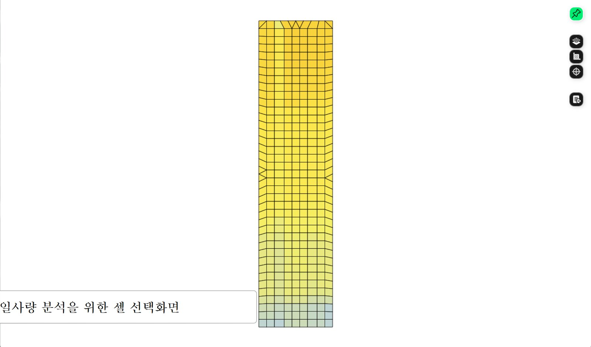
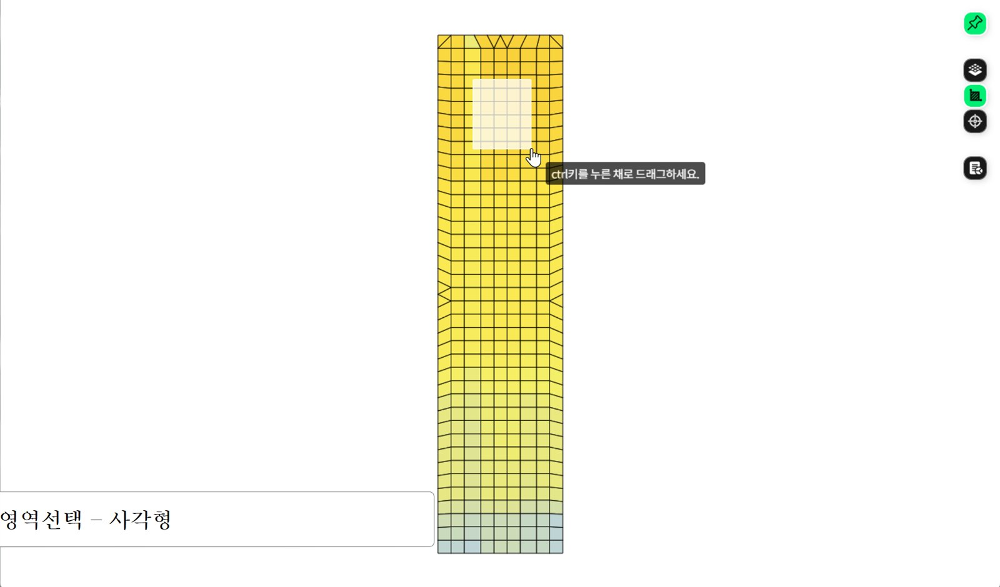
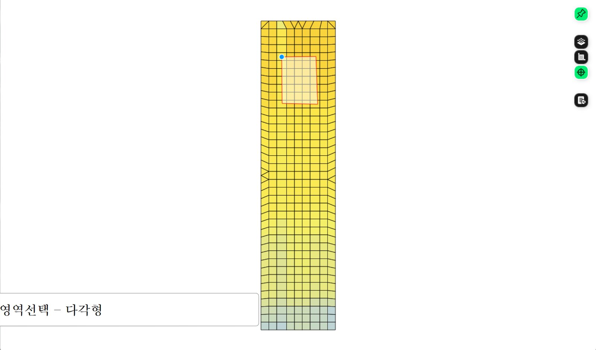
4-2. Histogram
Direct and diffuse radiation had to be compared across hundreds of cells. Treating values as categories lost their order; numeric axes squeezed crowded values together. We tried bidirectional, split and stacked bars with the client, then settled on a bar chart users can drag to zoom into — down to a single bar, with Shift to pan — and checked how many decimals the values needed. The selected values export as CSV.
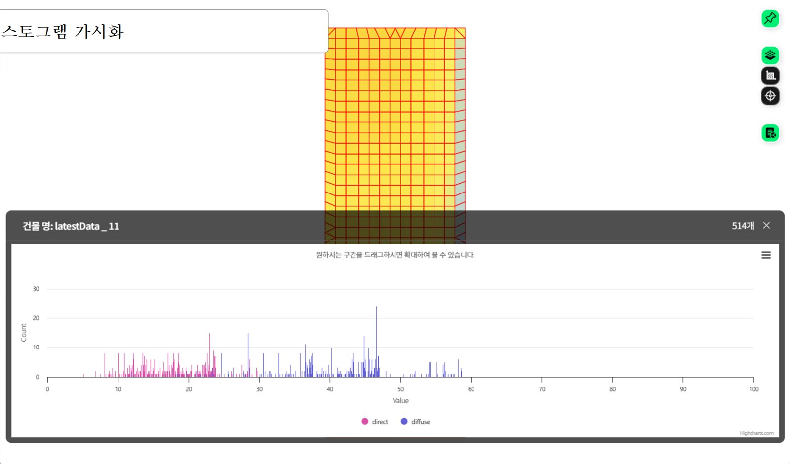
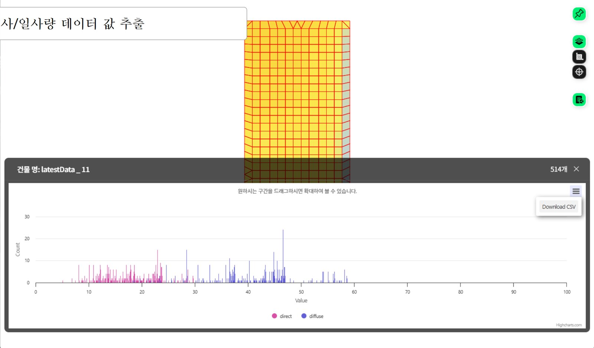
4-3. Refinements
After reviews I matched the analysis colors to the original data, added the legend provided by the data producer, renamed the chart axes, switched the unit to kWh/m² and restyled the histogram. When terrain hid parts of the buildings, 3D Tiles were drawn on top of the terrain.
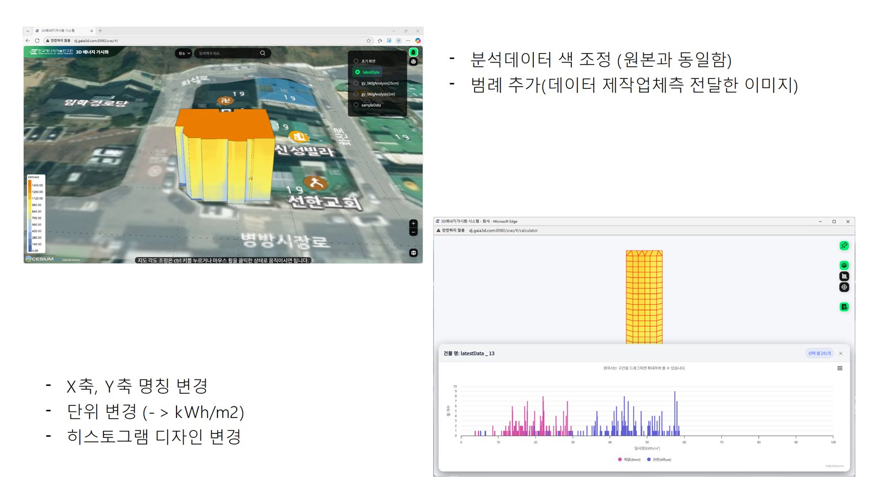
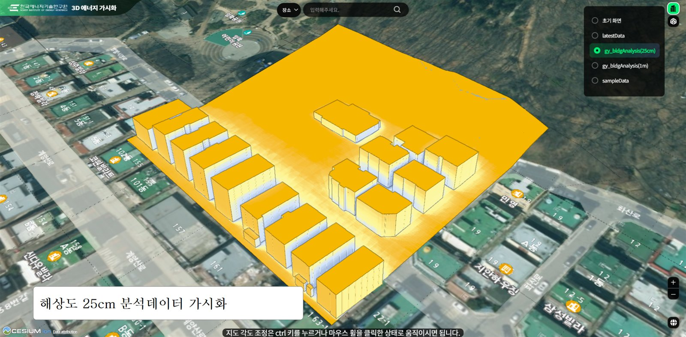
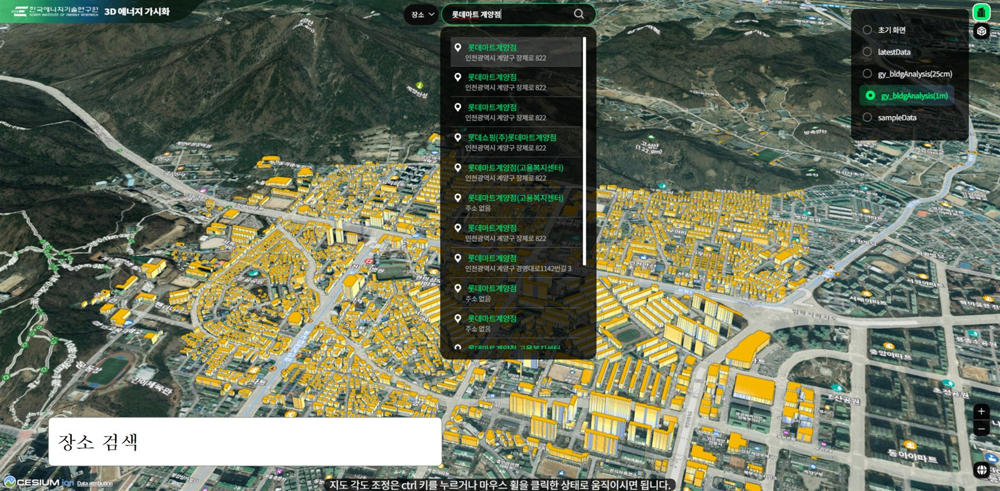
Because I handled requirements, screens and data production together, issues could be traced from the data all the way to the screen — and the progress deck kept every decision visible to the client and developers.
At the October demo, the institute concluded that selecting whole walls is enough — single-cell selection went further than needed. Next steps raised were user-defined ranges, showing only areas above a radiation threshold across an industrial complex, and a separate approach for complex-scale data, since one analysis covers one building shape.
Scaling to industrial complexes will need a formal application for the restricted building-height data and a converter that takes more than one input at a time.
Planning the Safety Map and map-layer admin for a shipyard GIS — requirements turned into functions and screens.
A Web GIS spatial-analysis flow that non-experts can follow — complex analysis turned into step-by-step choices.